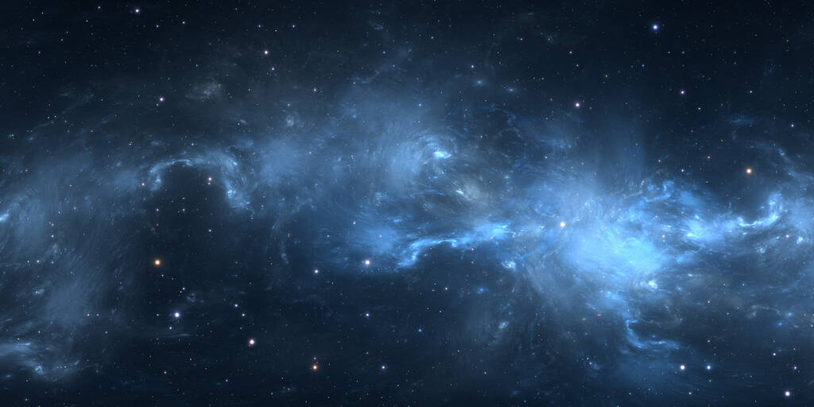
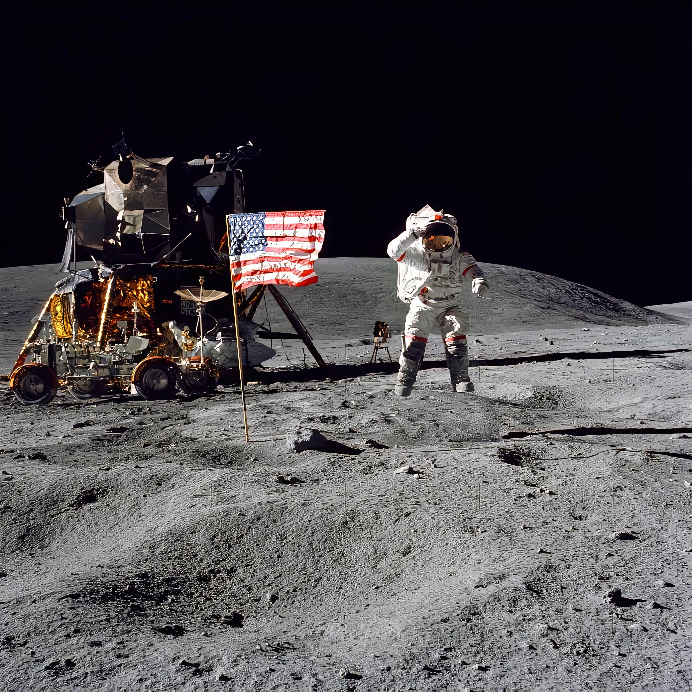
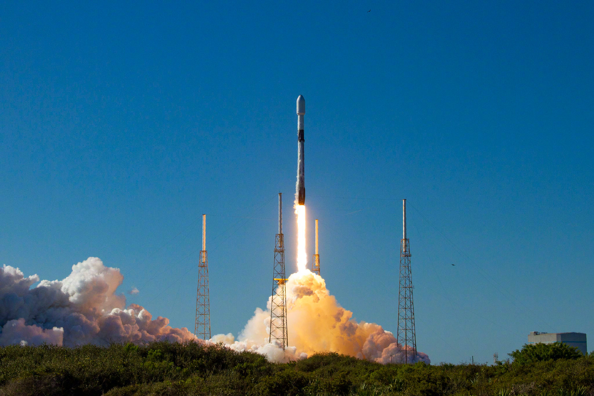
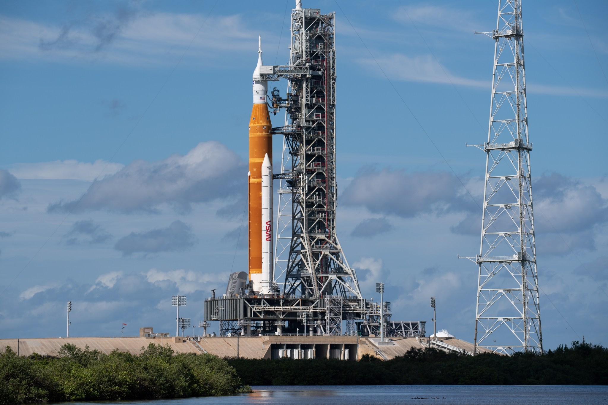
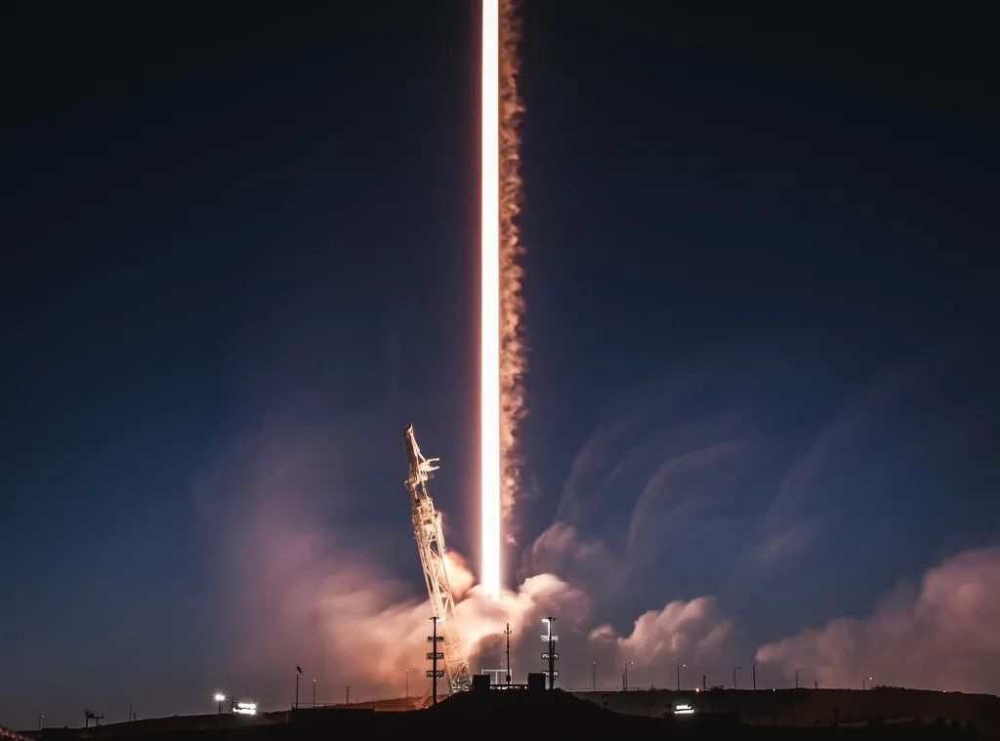
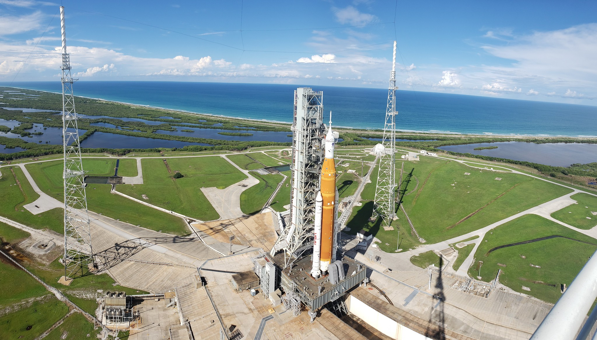

LEO · 近地轨道
轨道站计划
模块化商业轨道站，2028 年首舱入轨。支持科学实验、微重力制造与太空旅游，是 TEARS 在近地的立足点。
我们是 TEARS —— 一家虚构的航天探索公司。把地球托付给轨道，把人类的足迹带向深空。可重复使用火箭、轨道站、月面基地，一切刚刚开始。
从近地轨道到月面，再到更远的深空。TEARS 用三条任务线，逐步把人类文明推向星辰。

模块化商业轨道站，2028 年首舱入轨。支持科学实验、微重力制造与太空旅游，是 TEARS 在近地的立足点。

在南极-艾特肯盆地边缘建立常驻月面基地，利用原位资源制水制氧，为深空任务补给前哨。
2031 年无人货船先遣登陆火星，2035 年载人着陆。用一次一次脚印，把红色星球变成第二个家。
全系可回收复用，一级助推器可重复使用 20 次以上，把进入太空的成本降低一个数量级。

主力中型运载火箭，两级可回收构型。承担卫星部署、货运与载人任务，已连续成功 96 次。

重载构型，三芯并联。用于大型载荷、深空探测器的直接发射，曾单次将 60 t 送入近地轨道。

完全可重复使用的两级星舰，一级与上面级均垂直着陆回收。目标：单次发射成本降到 500 万美元以内。
看懂航天，从这几个概念开始。TEARS 的每一项技术，都建立在它们之上。
传统火箭一次报废，成本极高。TEARS 让一级火箭垂直着陆回收、翻新再飞，单次发射成本骤降一个数量级——这是太空经济能够成立的前提。
卫星不是"扔上去"就行，而是以约 7.9 km/s 的第一宇宙速度环绕地球。变轨、交会对接、再入窗口，全都由轨道力学精密计算决定，差 1 m/s 就可能是另一个故事。
离开地球引力后，航天器沿霍曼转移轨道滑行，靠微弱推力微调。一次火星任务历时约 9 个月，全程无人补给，需要自主导航、辐射防护与生命保障系统的高度可靠。
两座沿海发射工位 + 一座内陆亚轨道试验场，全年可发射窗口超过 300 天。

紧邻赤道方向海域，向东发射可借助地球自转获得额外速度增量。场区配备垂直总装厂房、移动发射平台与回收着陆区，支持 TEARS-9 与 TEARS Heavy 全流程作业。
从三人的车库到百人团队，TEARS 用十年走出了一条民营航天的路。
三位创始人在车库中完成 TE-1 发动机概念设计，拿到第一笔种子投资。
首枚试验火箭完成亚轨道飞行，验证垂直回收关键算法，回收着陆偏差 3 米。
主力火箭开始商业运营，当年完成 22 次轨道发射，成功率 100%。
商业轨道站首舱入轨，与舱段在轨对接，开启常驻微重力实验时代。
无人货船在火星乌托邦平原软着陆，验证原位资源利用与深空通信。
TEARS-9 · 轨道站补给任务 T-34 · 沿海发射工位